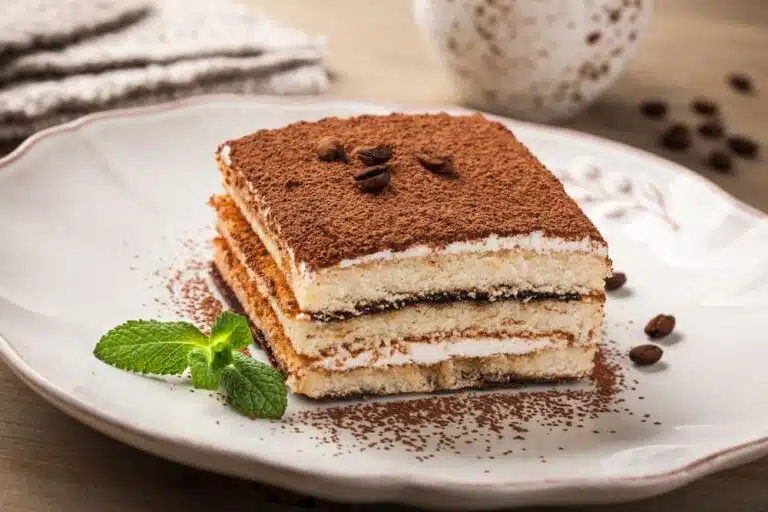

Back to home
Classic Tiramisu

Description
Tiramisu is a classic Italian dessert made with layers of coffee-soaked ladyfingers, mascarpone cheese, and cocoa powder. It's a rich and creamy treat that's perfect for any occasion.
Ingredients
- Ladyfingers
- Espresso coffee
- Mascarpone cheese
- Eggs
- Sugar
- Cocoa powder
- Dark chocolate
Steps
- Brew the espresso and let it cool
- Whisk egg yolks and sugar until thick and pale
- Fold in mascarpone cheese
- Dip ladyfingers in espresso and layer them in a dish
- Spread the mascarpone mixture over the ladyfingers
- Repeat layers and finish with a dusting of cocoa powder and grated dark chocolate
- Chill in the refrigerator for at least 4 hours before serving